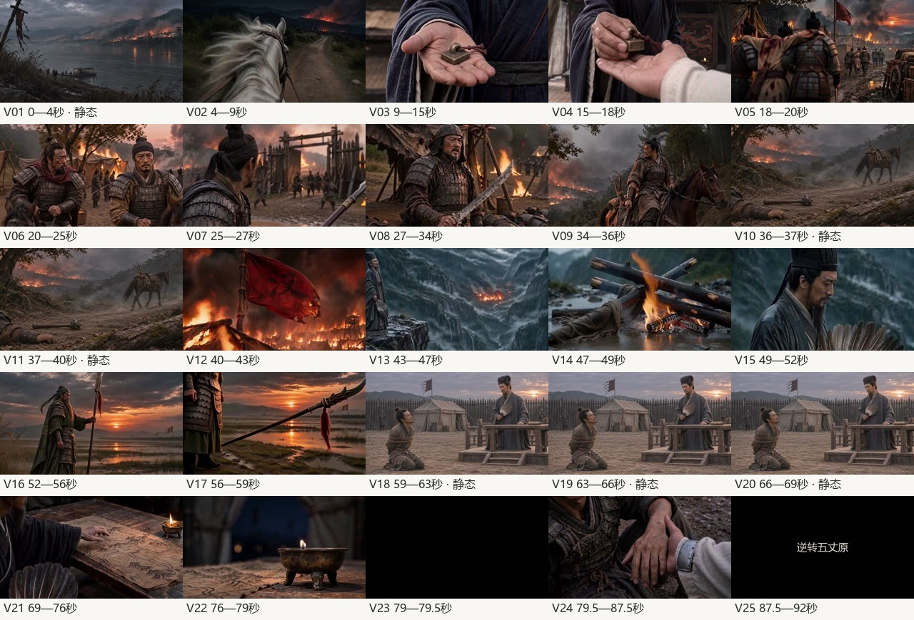

2026年11月15日 · v2 · 待review
想留住，却一次次从手里失去
《逆转五丈原》开篇PV整体重设计。山河火线开场；中箭后留给空鞍；马谡与诸葛亮先共享一个场景。最后，一双手终于抓住了活着的人。
这是92秒分镜预演，含18秒静态新构图。0—4、36—40、59—69秒尚未重生成动态，不能当作完成成片。当前主音轨为原生背景声分离候选，正确台词和终混尚未制作，可能损失呼吸等细节。本轮没有提交新的H3收费视频任务。
v2.1声音要求：全片不要BGM，允许人物声音。保留正确对白、呼吸、喘息和环境／动作声；原生混入的配乐同样要排除。下方仍为旧v2分离候选预演，尚未完成这项声音制作。查看整体重做要求
可点右侧时间，直接看对应段落。
三处重新建立的画面

开场：山河先于人
暗芦苇、江面、细长火线和远山分出四层。近岸人和船都小，先让观众看见人在什么处境里。

中箭：让空鞍交代结果
保留回望与一箭身亡。命中只用短促中断，不展示怪箭杆；落地后留空鞍、骨朵和空路。中箭动作仍待制作。

马谡与诸葛亮：先在同一个地方
马谡左下跪着看右上，诸葛亮在右上低台看左下。优先一条连续镜头完成相视、垂眼、举扇，避免独立反打失配。
九条待审H3重拍请求 · 合计60秒请求时长 · 未提交
每条含真实参考图路径、起止动作、发声限制、可提交Prompt候选与检查要求。新版通过后按指定MiniMax-H3 SOP生成；不自动重投旧G09。
来源与当前验证程度
现有动态来自PV-H3-20261115-v1采用版本，旧片与原始音轨保留。预演声音按新剪点从实际原片取样，静态分镜的声音仅作方向参考。已做技术解码、时间与路径检查；没有把机器ASR、抽帧或浏览器播放当作人工逐字听审或用户通过。
打开原108秒恢复原生声音的对照视频（画面未优化） · 剪辑来源记录 · 背景声分离记录
全片结构总览
